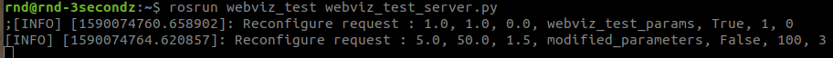

ROS Javascript dynamic_reconfigure simple parameter set example
Jinsun Park
(zzangjinsun@3secondz.com)
1. webviz_test pkg가 업데이트 되었으므로, ROS Dynamic Parameter Configuration Tutorial 을 참고하여 catkin_make install (또는 catkin build) 를 통해 다시 빌드 후 실행해야 한다.
2. ROS API를 통해 Parameter를 변경한다.
3. Dynamic_reconfigure의 set_parameters service를 이용한다.
4. webviz_test_server를 실행중인 터미널에 결과가 출력되면 정상적으로 작동. (그림 참조)
